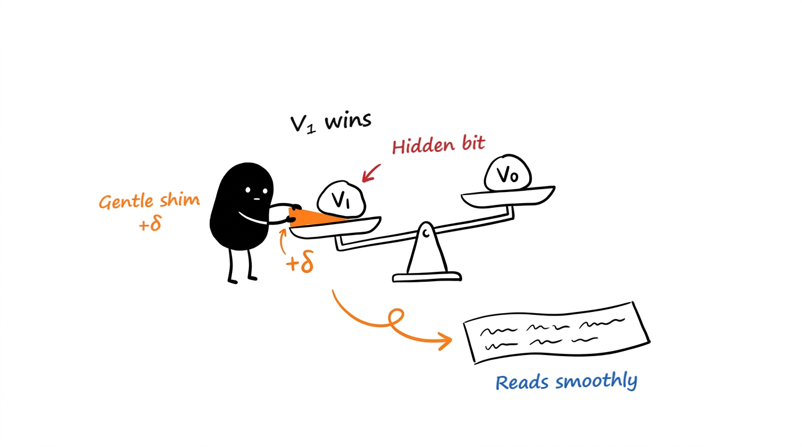

1. Steer green tokens
+δ
Embed hidden bit
b[3] = 1
without breaking prose.

Logit Step Inspector
t = 4 / 12
Next Flip (+2.0)
Watermarked Token Output · Codeword ID 1337
Language
model
watermarking
embeds
an undetectable
signal
V1 vs V0 Candidate Race
Pre-bias Check
V1 peak: "undetectable"
6.12
V0 peak: "invisible"
6.95
Codebit Target
b[3] = 1
Bias Delta
+0.0
+2.0
Picked Partition
V0
V1 (Match)